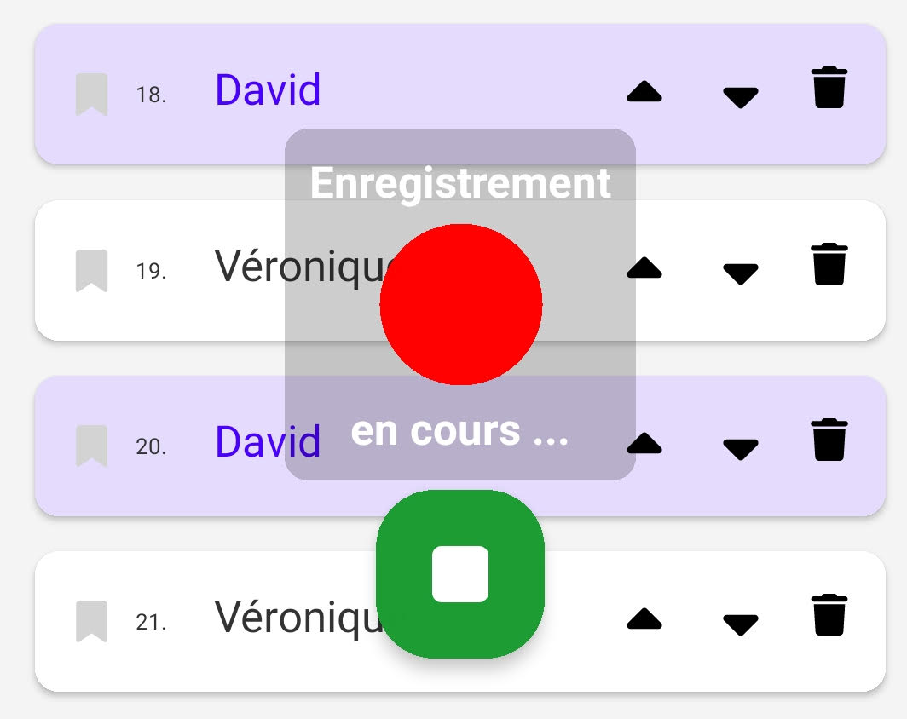

Introduction
Cette politique de confidentialité décrit comment l'application Homelet collecte, utilise et protége vos informations personnelles lorsque vous l'utilisez. Nous nous engageons à respecter votre vie privée et à protéger vos données.
Authentification
Toutes les fonctionnalités collboratives de l'application (partage de projet, de doublages) ne sont accesssibles qu'après authentification.
L'authentification est deléguée à l'authentification Firestore qui elle-même se repose sur Google et/ou Apple (en fonction de la nature de votre smartphone: Androïd ou iOS). Votre mot de passe n'est jamais vu par l'application ni par Firestore.
Seule votre adresse email et votre nom complet sont vus par l'application. Ces informations ne sont pas stoquées dans la base de données.
Seuls un identifiant unique anonyme Firestore et le pseudo que vous renseignez lors de votre connexion sont enregistrés. Les données que vous publiez éventuellement lorsque vous sauvegardez un projet ou que vous partagez vos doublages sont associées à cet identifiant unique anonyme.
Aucune correlation ne peut être faite entre vos enregistrements audios et votre addresse email ou votre nom complet sur la base des données stockées dans la base de données (Firestore).
Utilisation de l'enregistrement audio
Notre application nécessite l'autorisation d'enregistrement audio (RECORD_AUDIO) pour vous permettre d'utiliser les fonctionnalités suivantes :
- Enregistrement de vos répliques dans le cadre de la création d'un projet personnel (scéne en mode édition)
- Enregistrement de vos répliques dans le cadre de votre participation à un project partagé (scène en mode doublage)
En auncun cas l'application ne se permettra d'enregistrer de l'audio dans que vous ne l'ayez décidé et sans que vous n'en soyez informé. Lorsqu'un enregistrement est en cours, vous verrez toujours l'indicateur d'enregistrement qui ressemble à ceci :

Après que vous ayez arrêté l'enregistrement, vous aurez toujours la possibilité de le réécouter et de ne pas le conserver. Si vous décidez de le conserver, il restera local à votre appareil et ne sera partagé que suite à une action volontaire de votre part.
Collecte de données
Nous ne collectons aucune donnée personnelle identifiable via cette application. Toutes les données générées (par exemple, les enregistrements audio) sont stockés de manière anonyme et ne peuvent en aucun cas êtres associés à une personne en particulier.
L'application utilise une base de données distance sécurisée Firebase pour (et uniquement pour) les fonctionnalités collaboratives de l'application (partage de project, partage de doublages).
Des données sont téléchargées depuis la base de donnée Firebase vers votre appareil dans les circonstances suivantes :
- Lorsque vous sélectionnez un projet distant partagé ou public dans le menu "Ouvrir un projet"
- Lorsque vous cliquez sur "Raffraichir le projet"
- Lorsque vous cliquez sur "Choisir les doublages"
- Lorsque vous sélectionnez un projet, les premières répliques de chaque scène sont téléchargées.
- Lorsque vous ouvrez une scène, si les audios des répliques n'ont pas encore été téléchargées, elle le sont pour permettre la lecture.
- Lorsque vous démarrez l'application et qu'un projet distant est ouvert, il est raffaichi automatiquement (si des scènes ou des répliques ont été ajoutées ou modifiées, elles sont récupérées)
Aucune donnée n'est envoyée dans la base de données Firebase de manière automatique sans action de votre part. Des données sont téléchargées depuis votre appareil vers la base de donnée Firebase dans les circonstances suivantes :
- Lorsque vous vous authentifiez, votre pseudo et votre ID anonyme sont enregistrés
- Lorsque vous modifiez votre pseudo
- Lorsque vous cliquez sur "Sauvegarder le projet"
- Lorsque vous cliquez sur "Partager mes doublages"
- Lorsque vous cliquez sur "Envoyer et Nettoyer" dans l'onglet "Journaux"
Les préférences personnelles restent locales à l'appareil et ne sont pas envoyées dans la base de données Firebase. Aucune données concernant votre usage de l'application n'est envoyée dans la base de données Firebase. Seules les données nécessaires aux fonctions collaboratives de l'application sont envoyées dans la base de données Firebase.
Partage de données
Nous ne partageons aucune de vos données avec des tiers. Votre vie privée est notre priorité.
Sécurité des données
Les données stoquées dans la base de données (Firestore Database) sont sécurisées. Elles sont complètement inaccessibles à un utilisateur non authentifié.
Les données relatives à un project donné (audios, doublages) ne sont accessibles à d'autres utilisateurs authentifiés qu'à partir du moment ou le créateur du project les a invité dans sa "troupe".
Un projet non partagé et auquel personne n'est invité à participer n'est accessible que pour son créateur.
Nous mettons tout en œuvre pour garantir que vos données restent protégées sur votre appareil. Cependant, il est important de maintenir votre appareil sécurisé et de le protéger contre les accès non autorisés.
Modifications de cette politique
Nous pouvons mettre à jour cette politique de confidentialité de temps à autre. Nous vous encourageons à consulter cette page régulièrement pour rester informé des éventuels changements.
Nous contacter
Si vous avez des questions ou des préoccupations concernant cette politique de confidentialité, vous pouvez nous contacter à l'adresse suivante : homelet.app@gmail.com.